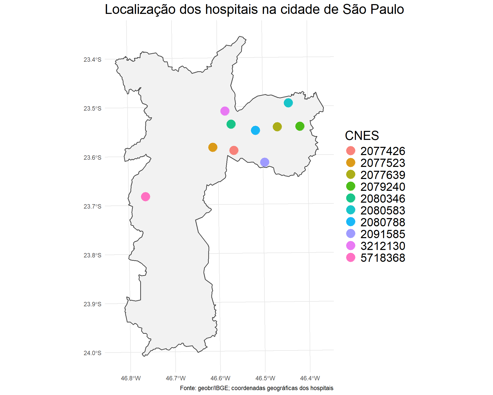
st3
📋Sumário
- Motivação
- Conjunto de dados
- Modelo de Cox com fragilidade
- Resultados e discussões
- Consideraçõs finais
- Principais referências

💡Motivação
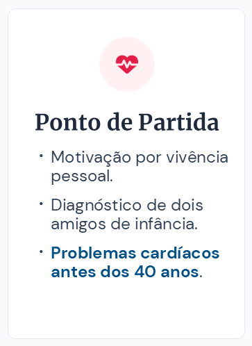
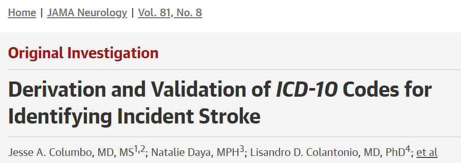
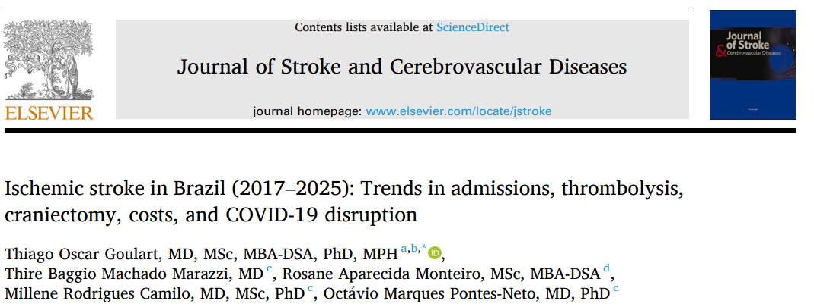
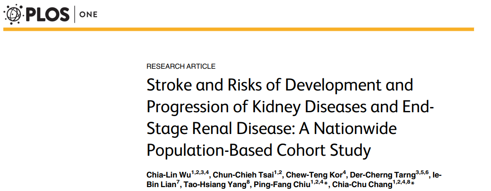
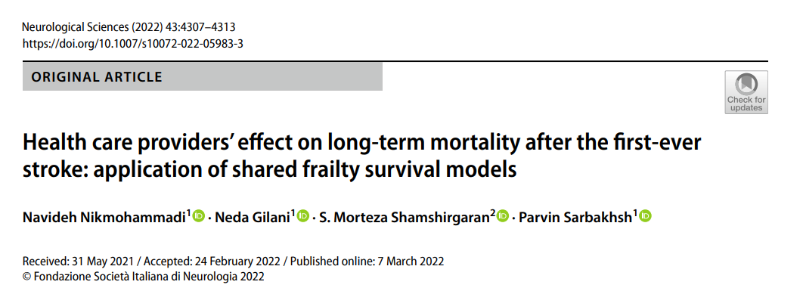
🗃️Conjunto de dados
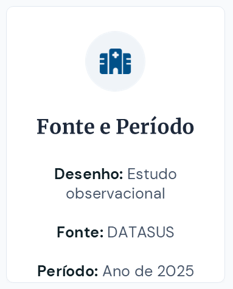
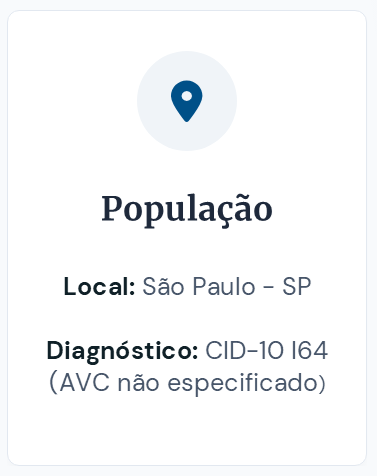
🧱Construção da base de dados
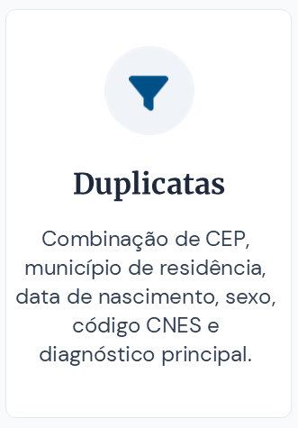
🧱Construção da base de dados
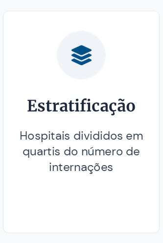
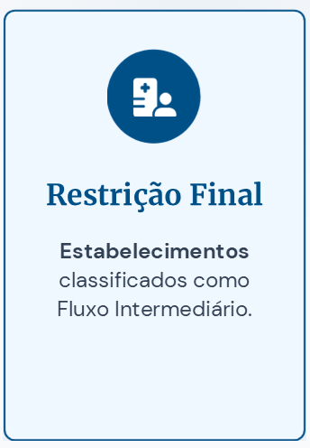
🧱Construção da base de dados
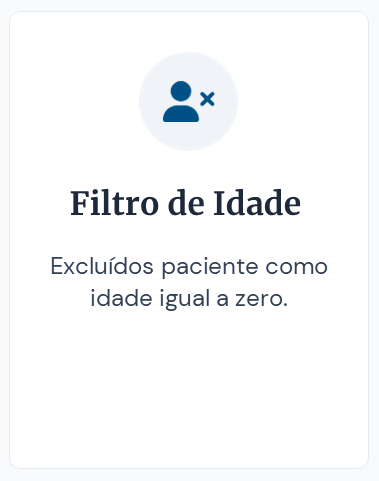
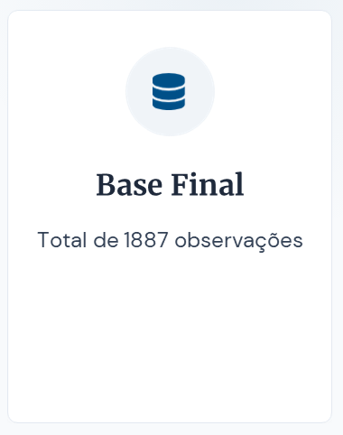
🔎Variáveis observadas
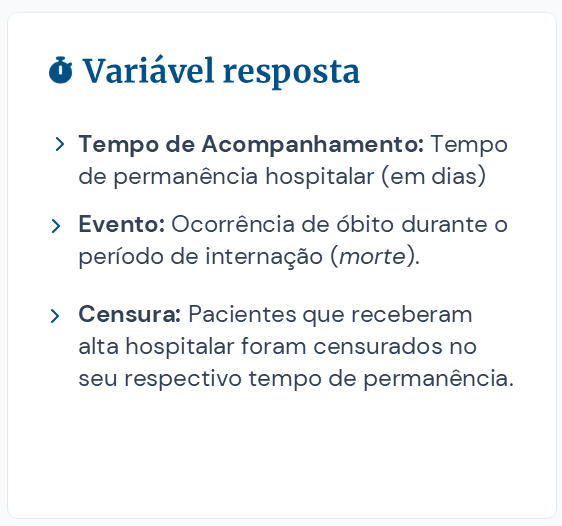
⚙️Modelo de Cox com fragilidade
O modelo de Cox é definido por
\[\lambda(t_i|X_i)=\lambda_0(t_i)\exp(X_i\beta), i=1,\ldots,n\]
🏥
Hospital 1
🏥
Hospital 2
🏥
Hospital 3
🚶♀️
🚶♀️
🚶♀️
🚶♀️
🚶♀️
🚶♀️
🚶♀️
🚶♀️
🚶♀️
🚶♀️
Fragilidade
Variável aleatória não observada associada a um indivíduo ou grupo
O modelo de Cox com o termo de fragilidade é dado por
\[\lambda(t_i|X_i)=\lambda_0(t_i)w_j\exp(X_i\beta), \quad i=1,\ldots,n_j, \quad j=1\ldots k\]
🗨️Resultados e discussões
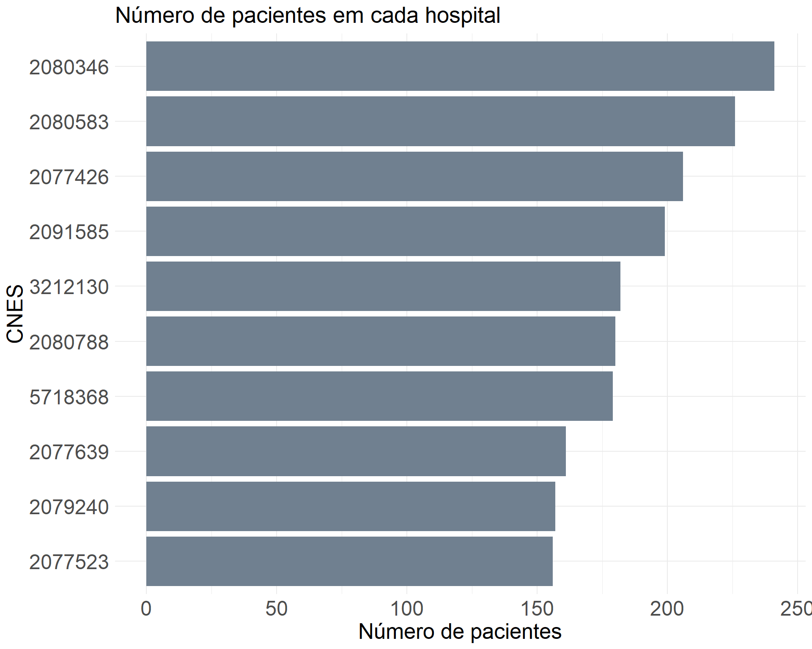
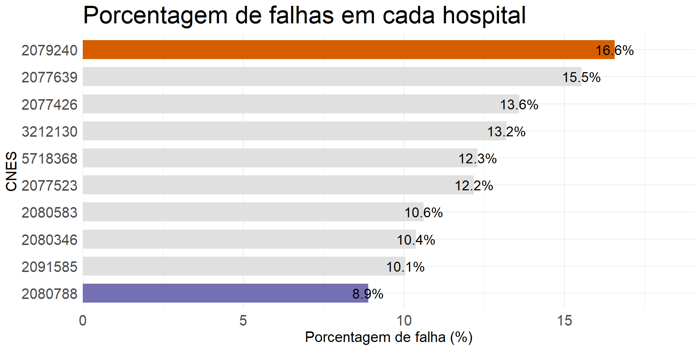
| Variável | Categoria | Frequência (%) |
|---|---|---|
| Sexo | Feminino | 48,5 |
| Masculino | 51,5 | |
| Cor | Branco | 44,0 |
| Não branco | 56,0 | |
| Uso de UTI | Sim | 14,3 |
| Não | 85,7 |
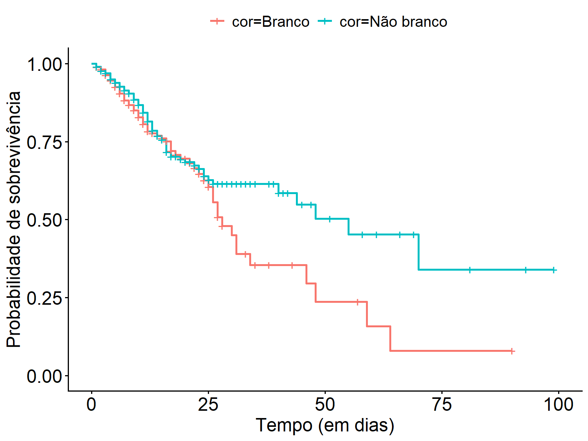
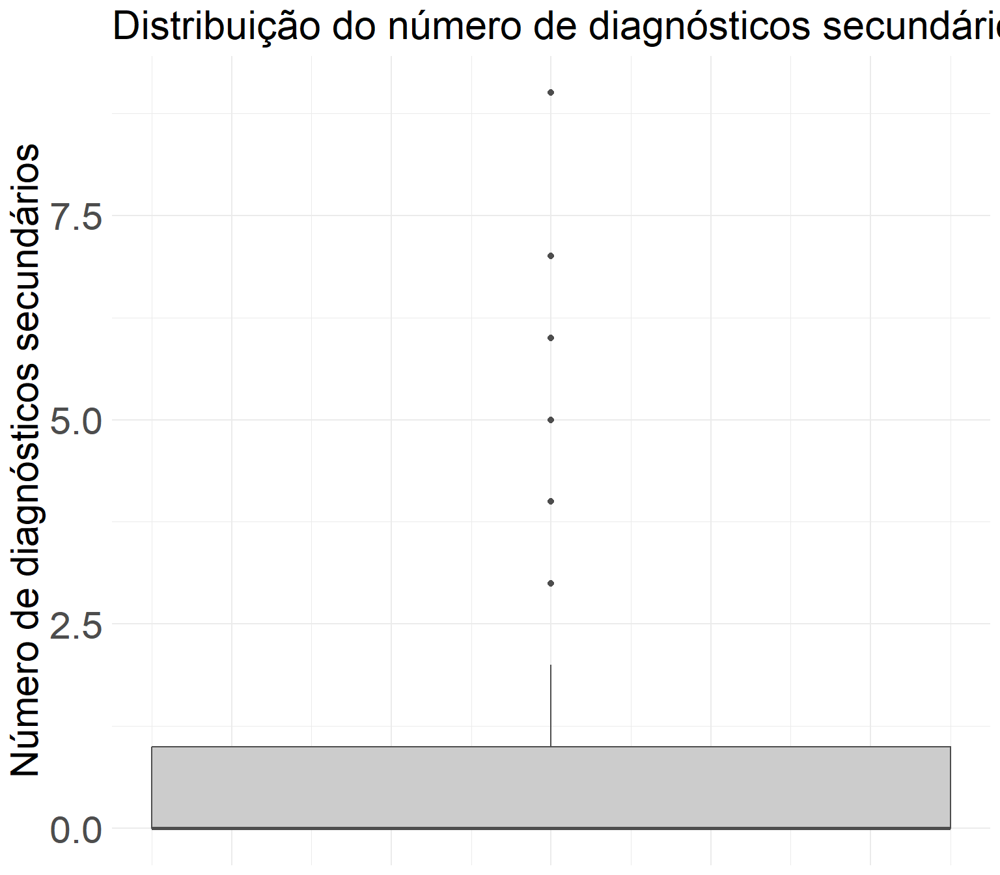

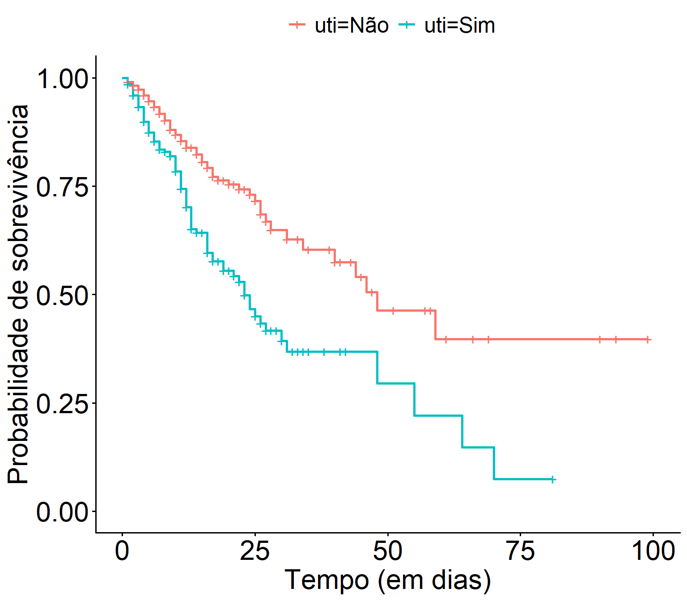
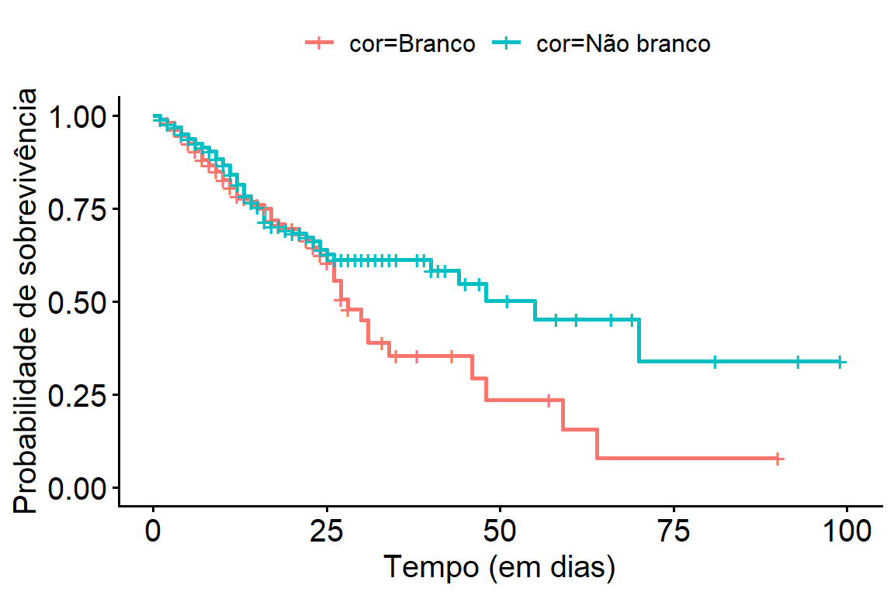
- Estimativas dos modelos de Cox
| Variável | Modelo 1 — Cox padrão | Modelo 2 — Fragilidade gama | Modelo 3 — Fragilidade normal | |||||||||
|---|---|---|---|---|---|---|---|---|---|---|---|---|
| Coef. | HR | EP | p | Coef. | HR | EP | p | Coef. | HR | EP | p | |
| Idade | 0,0231 | 1,023 | 0,0052 | 8,47e-06 | 0,0232 | 1,023 | 0,0053 | 1,3e-05 | 0,0232 | 1,023 | 0,0053 | 1,24e-05 |
| UTI (ref. Não) | 0,8694 | 2,385 | 0,1398 | 4,96e-10 | 0,8448 | 2,328 | 0,1473 | 9,8e-09 | 0,8534 | 2,348 | 0,1471 | 6,62e-09 |
| Nº diagnósticos secundários | 0,2164 | 1,242 | 0,0360 | 1,90e-09 | 0,2548 | 1,290 | 0,0480 | 1,1e-07 | 0,2569 | 1,293 | 0,0460 | 2,41e-08 |
| Cor (ref. branco) | −0,2599 | 0,771 | 0,1351 | 0,0544 | −0,2949 | 0,745 | 0,1394 | 0,0340 | −0,2914 | 0,747 | 0,1391 | 0,0361 |
- Comparação dos três modelos ajustados
| Modelo | AIC |
|---|---|
| Modelo 1 | 2774.815 |
| Modelo 2 | 2756.611 |
| Modelo 3 | 2755.247 |
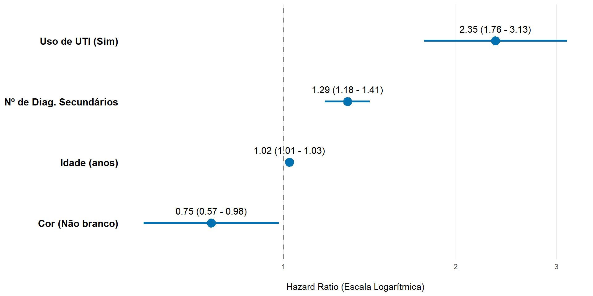
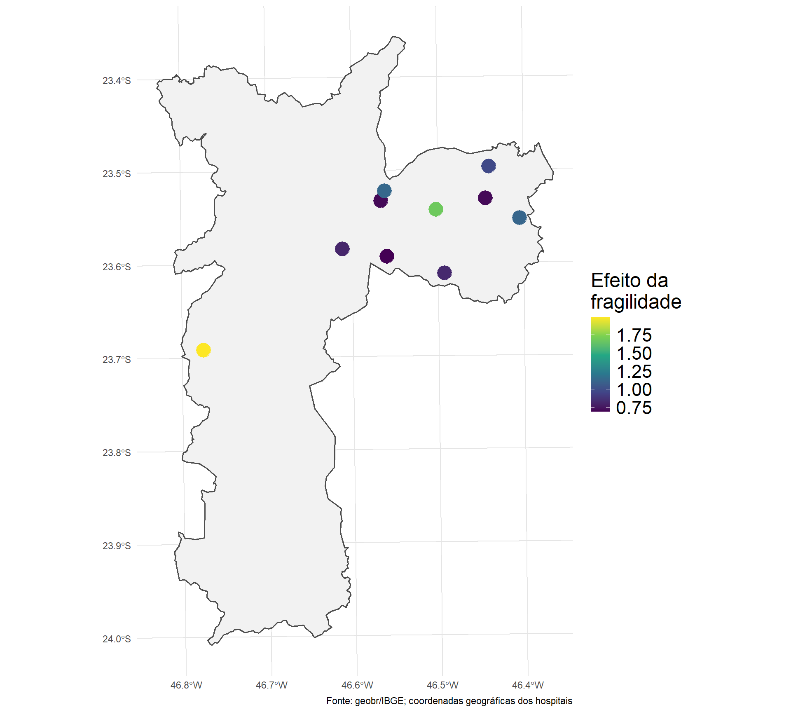
| CNES | Efeito |
|---|---|
| 2077426 | 0.6925116 |
| 2077523 | 0.8126438 |
| 2077639 | 0.7155243 |
| 2079240 | 1.1227485 |
| 2080346 | 0.7148528 |
| 2080583 | 0.9770912 |
| 2080788 | 1.6861590 |
| 2091585 | 0.8268476 |
| 3212130 | 1.1358889 |
| 5718368 | 1.9996514 |
🏁Considerações finais
Efeito fixo
- UTI e o número de diagnósticos secundários foram os principais preditores de óbito.
Efeito aleatório
- Variabilidade relevante entre hospitais (efeito de ~0,69 a ~2,00).
Limitações
Obtenção da base de dados.
Resultados com validade para o ano de 2025.
📚Referências
CHANG, T. E. et al. Trends and Factors Associated With Concordance Between International Classification of Diseases, Ninth and Tenth Revision, Clinical Modification Codes and Stroke Clinical Diagnoses. Stroke, v.50, p.1959-1967, 2019.
COLOSIMO, E.A; GIOLO, S.R. Análise de sobrevivência aplicada. 2. ed. São Paulo: Blucher, 2024.
COLUMBO, J. A. et al. Derivation and Validation of ICD-10 Codes for Identifying Incident Stroke. JAMA Neurology, v.81, p. 875-881, 2024.
📚Referências
GOULART, T. O. et al. Ischemic stroke in Brazil (2017–2025): Trends in admissions, thrombolysis, craniectomy, costs, and COVID-19 disruption. Journal of Stroke and Cerebrovascular Diseases, v.35, art.108631, 2026.
KILKENNY, M. F. et al. Utility of the Hospital Frailty Risk Score Derived From Administrative Data and the Association With Stroke Outcomes. Stroke, v.52, p.2874-2881, 2021.
NIKMOHAMMADI, N.; GILANI, N.; SHAMSHIRGARAN, S. M.; SARBAKHSH, P. Health care providers’ effect on long-term mortality after the first-ever stroke: application of shared frailty survival models. Neurological Sciences, v.43, p.4307-4313, 2022.
📚Referências
THERNEAU, T.M.; GRAMBSCH, P.M. Modeling Survival Data: Extending the Cox Model. New York: Springer, 2000.
WU, C.-L.; et al. Stroke and Risks of Development and Progression of Kidney Diseases and End-Stage Renal Disease: A Nationwide Population-Based Cohort Study. PLOS ONE, v.11, p. e0158533, 2016.
🔔Liga acadêmica Health Tech
@liga_healthtech


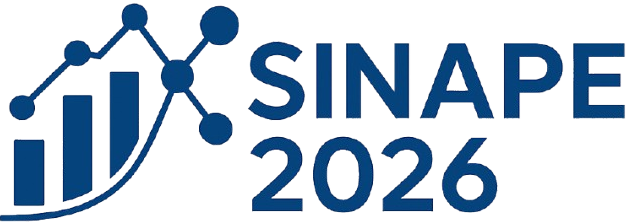
Sessão Temática 3